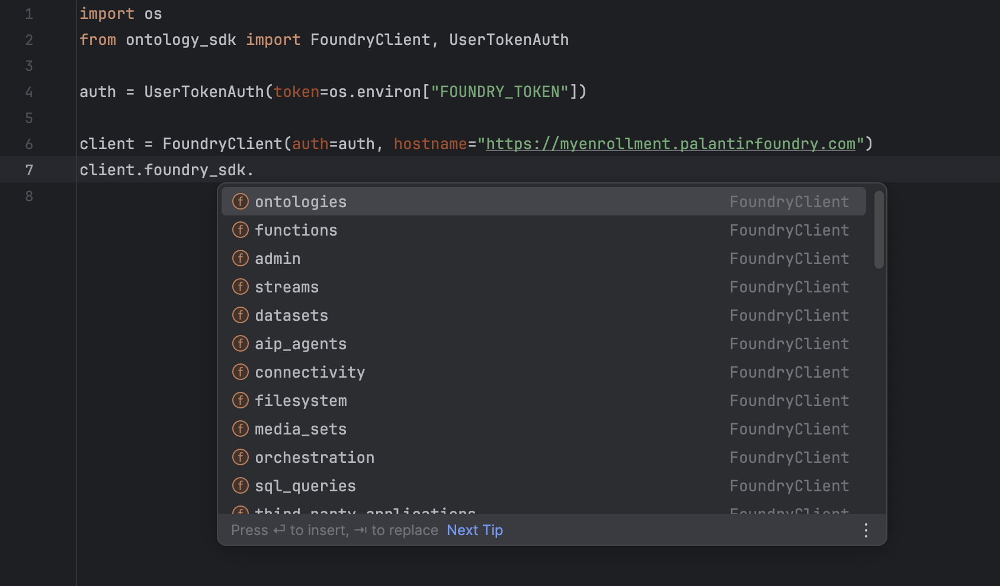
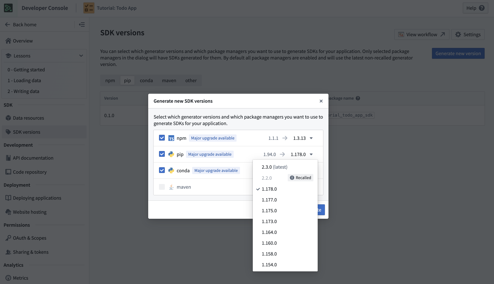

This guide is intended to help you migrate applications using Python OSDK 1.x to Python OSDK 2.x. The sections below explain the differences between the two versions and highlight relevant changes in syntax and structure.
:::callout{theme="neutral"}
Python OSDK documentation is also available in-platform in the Developer Console at /workspace/developer-console/. Use the version picker to select 2.x for documentation on Python OSDK 2.x.
:::
There are four main reasons to upgrade from Python OSDK 1.x to 2.x:
Developing with both the OSDK and Platform SDK no longer requires users to manage two separate clients. Both SDKs can now be accessed through a single client.

Optional[Objects]Optional[Objects]..get to retrieve the linked object. The link itself will be the object..page, .where, or .group_by) are now available to these links. In Python OSDK V1, only the methods .iterate and .get were available.AggregateObjectsResponsedict[str, Any], where the keys were fields such as excluded items, accuracy, data, and so on. With Python OSDK V2, aggregations now return an instance of AggregateObjectsResponse, whose fields are the same as the V1 dict type, but with improved type safety. The AggregateObjectsResponse in Python OSDK V2 has a .to_dict method, which will return the same response as in V1.Attachmentclient.ontology.attachments.upload(...) returned an AttachmentMetadata. In V2, uploading an attachment returns an Attachment.In Python OSDK V1, there was no easy way to edit the client configuration when sending requests. For example, if a user wanted to edit the user-agent of their requests, they would have to access the reserved ._session method on their client in order to do so. To avoid this issue, Python OSDK V2 provides a Config class that users can import and pass into their clients.
This new Config class has the following structure:
class Config:
# Configuration for the HTTP session.
default_headers: Optional[Dict[str, str]] = ...
# HTTP headers to include with all requests.
proxies: Optional[Dict[Literal["http", "https"], str]] = None
# Proxies to use for HTTP and HTTPS requests.
timeout: Optional[Union[int, float]] = None
# The default timeout for all requests in seconds.
verify: Optional[Union[bool, str]] = True
# SSL verification, can be a boolean or a path to a CA bundle.
default_params: Optional[Dict[str, Any]] = None
# URL query parameters to include with all requests.
scheme: Literal["http", "https"] = "https"
# URL scheme to use ('http' or 'https'). Defaults to 'https'.
from ontology_sdk import FoundryClient
client = FoundryClient()
client._session._user_agent += "something_new"
from ontology_sdk import FoundryClient, Config
config = Config(default_headers={"Content-Type": "application/json"})
client = FoundryClient(config=config)
Beta features have the potential to change, and their syntax, stability, and existence are not guaranteed. Stable releases of the Python OSDK V2 contain beta features, allowing you to try them out and provide feedback. To use a beta feature, you must import AllowBetaFeatures from foundry_sdk_runtime and either write your code within its context, or decorate your code with @AllowBetaFeatures(). When using Foundry Python functions, the @function decorator contains a beta boolean.
AllowBetaFeaturesfrom foundry_sdk_runtime.decorators import AllowBetaFeatures
with AllowBetaFeatures():
<your code>
AllowBetaFeaturesfrom foundry_sdk_runtime.decorators import AllowBetaFeatures
@AllowBetaFeatures()
my_func():
<your code>
The following code is required for Python functions to accept ontology objects with beta properties.
from functions.api import function
@function(beta=True)
def my_function():
<your code>
Beta features in Python OSDK V2 include the following:
Derived properties are properties calculated at runtime based on the values of other properties or links on objects. With OSDK V2, you can create derived properties on your object sets.
from foundry_sdk_runtime import AllowBetaFeatures
from ontology_sdk.ontology.objects import Object
with AllowBetaFeatures():
derived_object_type = Object.object_type.derived
my_object_set = client.ontology.object.with_properties(
my_new_property=derived_object_type.linked_object.id.count()
)
result = my_object_set.take(1)
print(result)
# Example output:
# Object(id=1, my_new_property=3.0)
In OSDK V2, you can filter object sets using nearest_neighbors to find the set of objects whose specified vector property is nearest to a provided query vector or text.
from foundry_sdk_runtime import AllowBetaFeatures
from ontology_sdk.ontology.objects import Object
my_object_set = client.ontology.objects.Object
with AllowBetaFeatures():
closest_objects = my_object_set.nearest_neighbors(
query="my query",
num_neighbors=3,
vector_property=Object.object_type.vector_property
)
print(list(closest_objects))
# Example output:
# [
# Object(rid=None, _score=None, id=1, embedding=None),
# Object(rid=None, _score=None, id=2, embedding=None),
# Object(rid=None, _score=None, id=3, embedding=None)
# ]
Markings in the OSDK are a string that represents mandatory security controls used to restrict resource access to only those users who satisfy all applied marking criteria.
from foundry_sdk_runtime import AllowBetaFeatures
from foundry_sdk_runtime.markings import Marking
my_object_set = client.ontology.objects.Object
with AllowBetaFeatures():
my_object = my_object_set.get(1)
print(my_object.marking_property)
# Example output:
# Marking("MyMarking")
A media property allows you to interact with their media types. You can get the content, metadata, and information on the media reference from media properties.
from foundry_sdk_runtime import AllowBetaFeatures
from foundry_sdk_runtime.media import Media
my_object_set = client.ontology.objects.Object
with AllowBetaFeatures():
my_object = my_object_set.get(1)
print(my_object.media_property)
# Example output:
# Media("media_property")
print(my_object.media_property.get_media_content())
# Example output:
# <_io.BytesIO object at 0x106ed32c0>
print(my_object.media_property.get_media_metadata())
# Example output:
# MediaMetadata(
# path='my_file.png'
# size_bytes=1408
# media_type='image/png'
# )
print(my_object.media_property.get_media_reference())
# Example output:
# MediaReference(
# mime_type='image/png'
# reference=MediaSetViewItemWrapper(
# media_set_view_item=MediaSetViewItem(
# media_set_rid='ri.mio.main.media-set.00000000-0000-0000-0000-000000000000',
# media_set_view_rid='ri.mio.main.view.00000000-0000-0000-0000-000000000000',
# media_item_rid='ri.mio.main.media-item.00000000-0000-0000-0000-000000000000',
# token=None
# ),
# type='mediaSetViewItem'
# )
# )
Vector properties are lists of floats. They can be used to perform nearest neighbor filtering.
from foundry_sdk_runtime import AllowBetaFeatures
from foundry_sdk_runtime.vector import Vector
from ontology_sdk.ontology.objects import Object
my_object_set = client.ontology.objects.Object
with AllowBetaFeatures():
my_object = my_object_set.get(
1,
properties=[Object.object_type.vector_property]
)
print(my_object.vector_property)
# Example output:
# Vector([0.014408838003873825, ..., -0.012173213064670563])
You can generate a new SDK version for an existing Developer Console application using the Python OSDK 2.x generator (accessed through the Generate new version option) in the SDK versions tab of your application.

Existing applications must also have the required dependencies to use the newly generated SDK. New applications created in Developer Console will generate SDKs using the Python OSDK 2.x generator by default. You can quickly get started by following the instructions in the Start developing tab.
This section contains simple examples that illustrate how to map between Python OSDK 1.x and 2.x.
.object_type in the where expression when referencing the property that is being filtered on..is_member_of has been renamed to .in_..contains_any_term(...).contains_all_terms(...).contains_all_terms_in_order(...)starts_with method was removed in Python OSDK 2.75.0. Use contains_all_terms_in_order with prefix_last_term=True for prefix matching.client.ontology.object.where(Object.id.is_member_of([1, 2, 3])).take(1)
client.ontology.object.where(Object.object_type.id.in_([1, 2, 3])).take(1)
| Link type | V1 response | V2 response |
|---|---|---|
| One-to-one / many-to-one | ObjectLinkClass instance | Optional[Object] |
| One-to-many / many-to-many | ObjectLinkClass instance | ObjectSet instance |
In Python OSDK V1, use .get to retrieve the linked object.
linked_obj: Optional[LinkedObject] = client.ontology.object.linked_object.get()
In Python OSDK V1, the only methods available are .iterate and .get.
linked_obj: ObjectLinkType = client.ontology.object.linked_object
linked_obj.iterate() â Iterable[LinkedObject]
linked_obj.get(1) â Optional[LinkedObject]
In Python OSDK V2, the link itself is a method that returns an instance of the linked object.
linked_obj: Optional[LinkedObject] = client.ontology.object.linked_object()
In Python OSDK V2, any method available to object sets are now available on links, including .take, .where, and .group_by; this makes it easier to filter, aggregate, and iterate over links.
linked_obj: LinkedObjectSet = client.ontology.object.linked_object()
# All V1 methods are available
linked_obj.iterate() â Iterable[LinkedObject]
linked_obj.get(1) â Optional[LinkedObject]
# Search, aggregation, and iteration is now available
from ontology_sdk.ontology.objects import LinkedObject
result: float = linked_obj.where(LinkedObject.object_type.id > 5).count().compute()
Queries in OSDK V2 have changes to their return types, and all arguments to queries in V2 are keyword arguments.
| Return type | Object primary key (float, string) | Object instance |
|---|---|---|
| Object | Object primary key (float, string) | Object instance |
| ObjectSet | ObjectSet RID (string) | ObjectSet instance |
| Attachment | Attachment RID (string) | Attachment instance |
result: float = client.ontology.queries.query_object_output(1)
print(result)
# Example output:
# 1.0
result: str = client.ontology.queries.query_object_set_output(1)
print(result)
# Example output:
# "ri.object-set.main.object-set.e5c05475-8766-4804-9be0-66cf7854de5c"
result: str = client.ontology.queries.query_attachment_output(1)
print(result)
# Example output:
# "ri.attachments.main.attachment.2c1432f8-0378-45f2-8280-55d858cb71fc"
result: Object = client.ontology.queries.query_object_output(object_id = 1)
print(result)
# Example output:
# Object(id = 1)
result: ObjectSet = client.ontology.queries.query_object_set_output(object_id = 1)
print(result)
# Example output:
# ObjectSet(object_set_definition=...)
result: Attachment = client.ontology.queries.query_attachment_output(object_id = 1)
print(result)
# Example output:
# Attachment(rid="ri.attachments.main.attachment.2c1432f8-0378-45f2-8280-55d858cb71fc")
result: QueryTwoDimensionalAggregation = client.ontology.queries.query_two_dimensional_output()
print(result)
# Example output:
# QueryTwoDimensionalAggregation(
# groups=[
# QueryAggregation(key='1', value=2.0),
# QueryAggregation(key='2', value=3.0)
# ]
# )
result: QueryThreeDimensionalAggregation = client.ontology.queries.query_three_dimensional_output()
print(result)
# Example output:
# QueryThreeDimensionalAggregation(
# groups=[
# NestedQueryAggregation(
# key='1',
# groups=[
# QueryAggregation(key='ABC', value=2.0),
# QueryAggregation(key='DEF', value=4.0)
# ]
# ),
# NestedQueryAggregation(
# key='2',
# groups=[
# QueryAggregation(key='GHI', value=1.0),
# QueryAggregation(key='JKL', value=1.0)
# ]
# )
# ]
# )
result: dict[Object, int] = client.ontology.queries.query_map_output(object_id = 1)
print(result)
# Example output:
# {
# Object(id=1): 1,
# Object(id=2): 3
# }
Aggregations that return more than a single value (that is, those derived from .group_by and .aggregate) return AggregateObjectsResponse as opposed to Dict[str, Any]. If you would like to return the Python OSDK V1 response, the AggregateObjectsResponse has a .to_dict method on it, which returns a dictionary representation of the response.
| V1 response | V2 response |
|---|---|
| Dict[str, Any] | AggregateObjectsResponse |
result: dict[str, Any] = client.ontology.objects.Object.aggregate({
"min_id": Object.object_type.id.min(),
"max_id": Object.object_type.id.max()
}).compute()
print(result)
# Example output:
# {
# 'accuracy': 'ACCURATE',
# 'data': [
# {
# 'group': {},
# 'metrics': [
# {'name': 'min_id', 'value': 1.0},
# {'name': 'max_id', 'value': 99.0}
# ]
# }
# ]
# }
result: AggregateObjectsResponse = client.ontology.objects.Object.aggregate({
"min_id": Object.object_type.id.min(),
"max_id": Object.object_type.id.max()
}).compute()
print(result)
# Example output:
# AggregateObjectsResponse(
# excluded_items=None,
# accuracy='ACCURATE',
# data=[
# AggregateObjectsResponseItem(
# group={},
# metrics=[
# AggregationMetricResult(name='min_id', value=1.0),
# AggregationMetricResult(name='max_id', value=99.0)
# ]
# )
# ]
# )
In OSDK V1, when uploading an attachment, the return type is an AttachmentMetadata. In V2, the return type is an Attachment.
result: AttachmentMetadata = client.ontology.attachments.upload(
file_path="file.json",
attachment_name="myFile"
)
print(result)
# Example output:
# AttachmentMetadata(
# rid='ri.attachments.main.attachment.00000000-0000-0000-0000-000000000000',
# filename='myFile',
# size_bytes=20,
# media_type='*/*',
# type='single'
# )
result: Attachment = client.ontology.attachments.upload(
file_path="file.json",
attachment_name="myFile"
)
print(result)
# Example output:
# Attachment(rid=ri.attachments.main.attachment.00000000-0000-0000-0000-000000000000)
print(result.get_metadata())
# Example output:
# AttachmentMetadata(
# rid='ri.attachments.main.attachment.00000000-0000-0000-0000-000000000000',
# filename='myFile',
# size_bytes=20,
# media_type='*/*',
# type='single'
# )
print(result.read().getvalue())
# Example output:
# b'My example file.\n'
In OSDK V1, when grouping by ranges, the accepted input is a list of dicts, where the keys of each dict are start_value and end_value, and the values are the start and end of each range. In V2, the new input type is a set of tuples, where the first element of the tuple is the start_value and the second element is the end_value for each range.
from ontology_sdk.ontology.objects import Object
client.ontology.objects.Object.group_by(
Object.object_type.int_property.ranges(
[{"start_value": 1, "end_value": 2}, {"start_value": 3, "end_value": 4}]
)
)
from ontology_sdk.ontology.objects import Object
client.ontology.objects.Object.group_by(
Object.object_type.int_property.ranges({(1, 2), (3, 4)})
)
Point is renamed to GeoPoint.Request exceptions are now imported directly from foundry_sdk instead of foundry_sdk_runtime.errors. This includes the following exceptions:
from foundry_sdk_runtime.errors import PalantirRPCException
from foundry_sdk import PalantirRPCException
ActionResponse has been changed to SyncApplyActionResponse.BatchActionResponse has been changed to BatchApplyActionResponse.ValidationResult has been removed as an enum. It exists as a Literal and can be imported from foundry_sdk.v2.ontologies.models.from ontology_sdk.types import (
ActionConfig,
ActionMode,
ReturnEditsMode,
ValidationResult
)
from foundry_sdk_runtime.types import ActionResponse
response: ActionResponse = client.ontology.actions.action_example(
action_config=ActionConfig(
mode=ActionMode.VALIDATE_AND_EXECUTE,
return_edits=ReturnEditsMode.ALL),
parameter_example="value"
)
if response.validation.validation_result == ValidationResult.VALID:
...
print(response)
# Example output:
# ActionResponse(
# validation=ValidateActionResponse(
# result='VALID',
# submission_criteria=[],
# parameters={}
# ),
# edits=EditsActionResponse(
# type='edits',
# edits=[
# EditObjectResponse(
# type='addObject',
# primary_key='value',
# object_type='ExampleObjectType'
# )
# ],
# added_objects_count=1,
# modified_objects_count=0,
# deleted_objects_count=0,
# added_links_count=0,
# deleted_links_count=0
# )
# )
from foundry_sdk_runtime.types import (
ActionConfig,
ActionMode,
ReturnEditsMode,
SyncApplyActionResponse
)
response: SyncApplyActionResponse = client.ontology.actions.action_example(
action_config=ActionConfig(
mode=ActionMode.VALIDATE_AND_EXECUTE,
return_edits=ReturnEditsMode.ALL),
parameter_example="value"
)
if response.validation.result == "VALID":
...
print(response)
# Example output:
# SyncApplyActionResponse(
# validation=ValidateActionResponse(
# result='VALID',
# submission_criteria=[],
# parameters={}
# ),
# edits=ObjectEdits(
# type='edits',
# edits=[
# AddObject(
# primary_key='value',
# object_type='ExampleObjectType',
# type='addObject'
# )
# ],
# added_object_count=1,
# modified_objects_count=0,
# deleted_objects_count=0,
# added_links_count=0,
# deleted_links_count=0
# )
# )
from ontology_sdk.types import BatchActionConfig, ReturnEditsMode
from ontology_sdk.ontology.action_types import ActionExampleBatchRequest
from foundry_sdk_runtime.types import BatchActionResponse
response: BatchActionResponse = client.ontology.batch_actions.action_example(
batch_action_config=BatchActionConfig(return_edits=ReturnEditsMode.ALL),
requests=[
ActionExampleBatchRequest(
parameter_example="value_1"
),
ActionExampleBatchRequest(
parameter_example="value_2"
)
]
)
print(response)
# Example output:
# BatchActionResponse(
# edits=EditsActionResponse(
# type='edits',
# edits=[
# EditObjectResponse(
# type='addObject',
# primary_key='value_1',
# object_type='ExampleObjectType'
# ),
# EditObjectResponse(
# type='addObject',
# primary_key='value_2',
# object_type='ExampleObjectType'
# )
# ],
# added_objects_count=2,
# modified_objects_count=0,
# deleted_objects_count=0,
# added_links_count=0,
# deleted_links_count=0
# )
# )
from foundry_sdk_runtime.types import BatchActionConfig, BatchApplyActionResponse, ReturnEditsMode
from ontology_sdk.ontology.action_types import ActionExampleBatchRequest
response: BatchApplyActionResponse = client.ontology.batch_actions.action_example(
batch_action_config=BatchActionConfig(return_edits=ReturnEditsMode.ALL),
requests=[
ActionExampleBatchRequest(
parameter_example="value_1"
),
ActionExampleBatchRequest(
parameter_example="value_2"
)
]
)
print(response)
# Example output:
# BatchApplyActionResponse(
# edits=BatchActionObjectEdits(
# type='edits',
# edits=[
# AddObject(
# primary_key='value_1',
# object_type='ExampleObjectType',
# type='addObject'
# ),
# AddObject(
# primary_key='value_2',
# object_type='ExampleObjectType',
# type='addObject'
# )
# ],
# added_object_count=2,
# modified_objects_count=0,
# deleted_objects_count=0,
# added_links_count=0,
# deleted_links_count=0
# )
# )